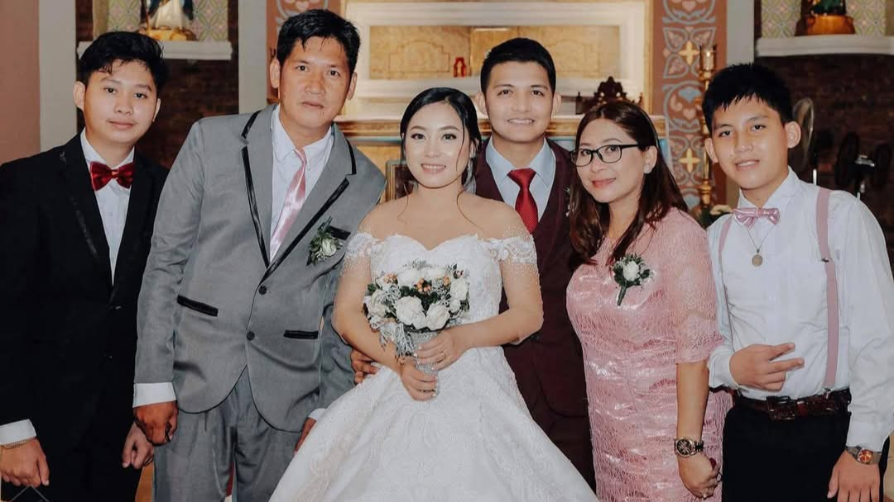
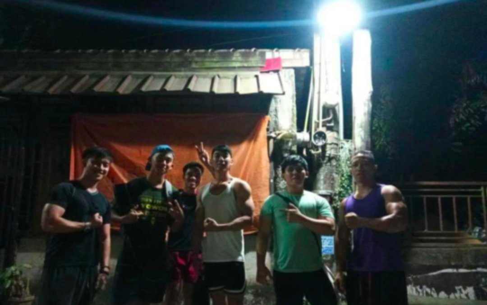
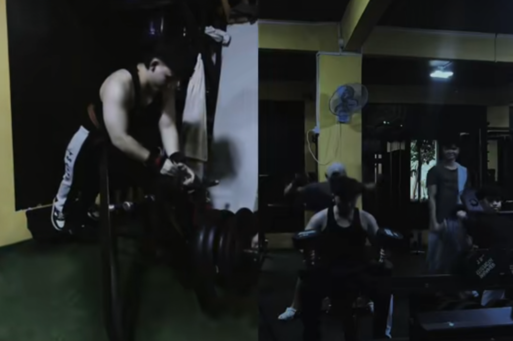
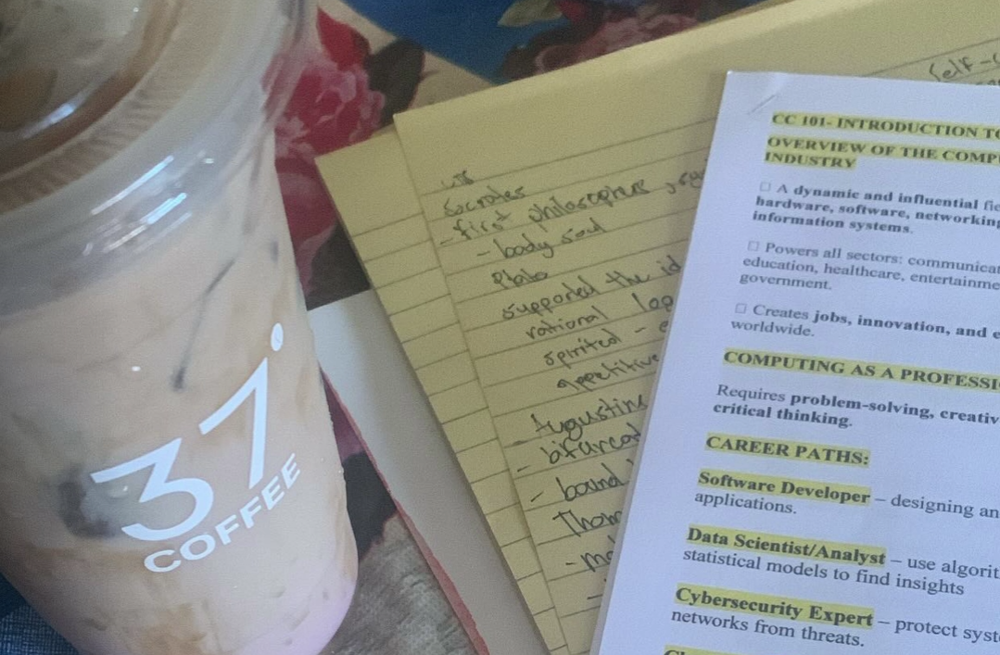

Quick Facts
- Birthday: October 7, 2007
- Location: Lipa, Batangas
- Academic: BSCS 1-H
- Interest: Technology, Programming, Learning new skills
Short Introduction
- Passionate about learning programming and exploring new technologies.
- Enjoys joining school activities and collaborating with peers.
- Strives to contribute to the community and help others.
Detailed Information
Personal Details
- Birthday: October 7, 2007
- Location: Purok 3, San Lucas, Lipa City, Batangas
Achievements
- No grades below 80
- Active in school events and activities
Academic Background
- San Lucas Kindergarten School – Kindergarten graduation: 2012
- San Lucas Elementary School – Elementary graduation: 2018
- The Mabini Academy – Junior High graduation: 2022
- The Mabini Academy – Senior High graduation: 2024–2025
Family Members
- Brother: Joemarie G. Maralit
- Mother: Berndatte G. Maralit
- Father: Enrique A. Maralit
- Sister: Marjorie M. Dela Peña
Family Photos


Short Description
- Attended Mass unexpectedly, which became a blessed family moment.
- Strengthened family bonds and spiritual connection.
- Created a beautiful memory of togetherness and gratitude.
Friends
Photos with Friends


Short Description
- These are my gym buddies who became true friends over time.
- They push me to improve physically and guide me in life.
- Supportive, encouraging, and always ready to help me grow.
Hobbies & Activities


Descriptions
- Gym: Strengthens my body, improves discipline, and motivates me daily.
- Online Games: Helps relieve stress, relax, and feel accomplished when overcoming challenges.
- Coffee while Studying: Keeps me focused, productive, and alert during work or study sessions.